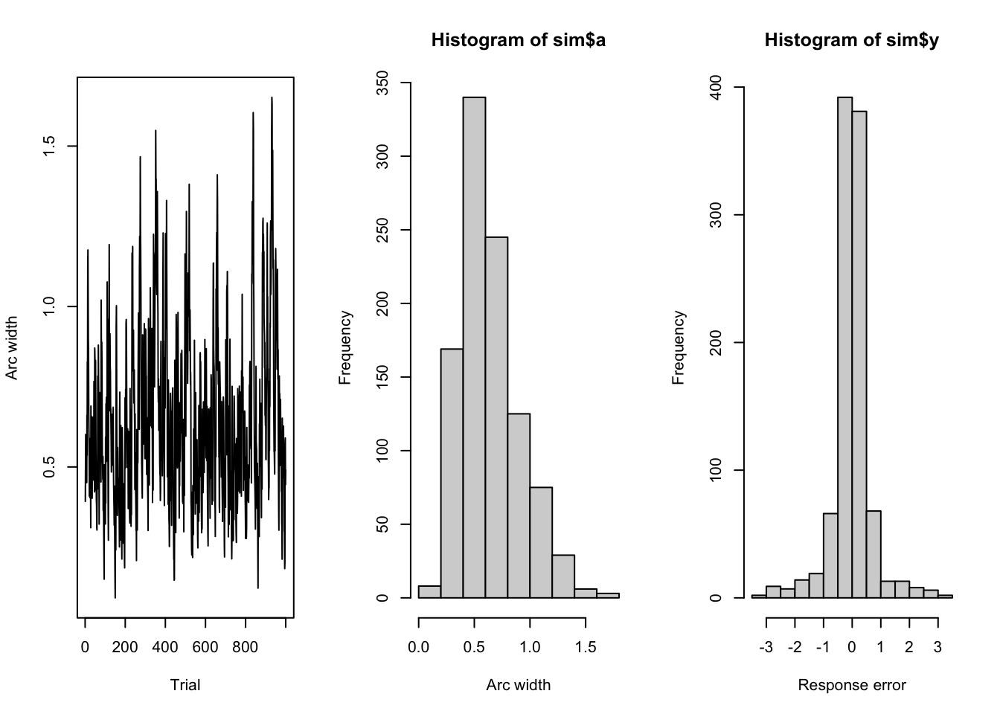
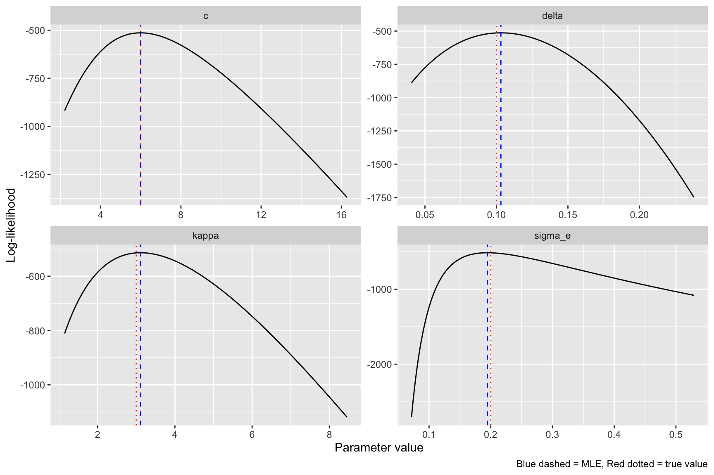
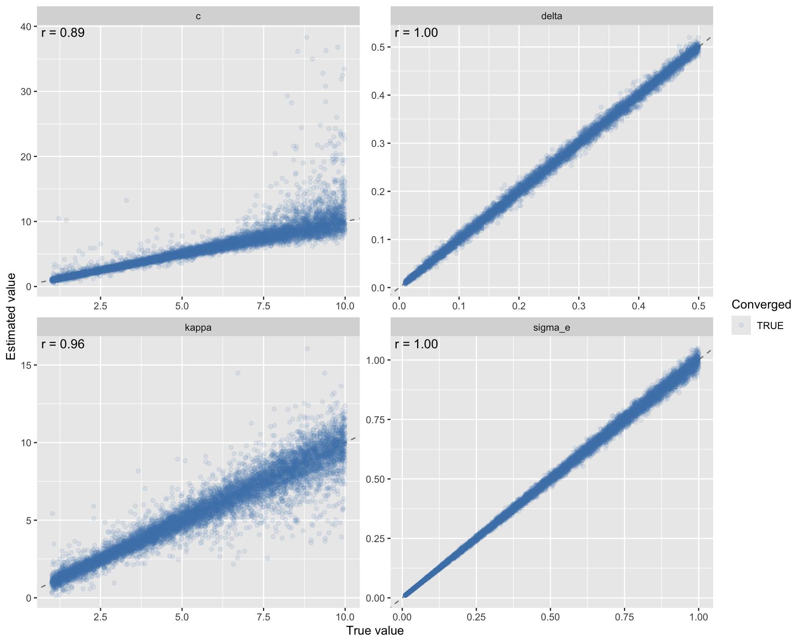
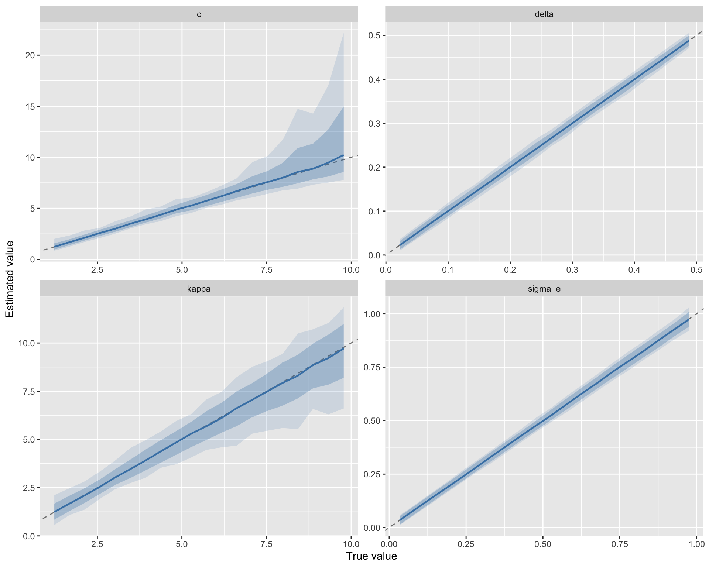
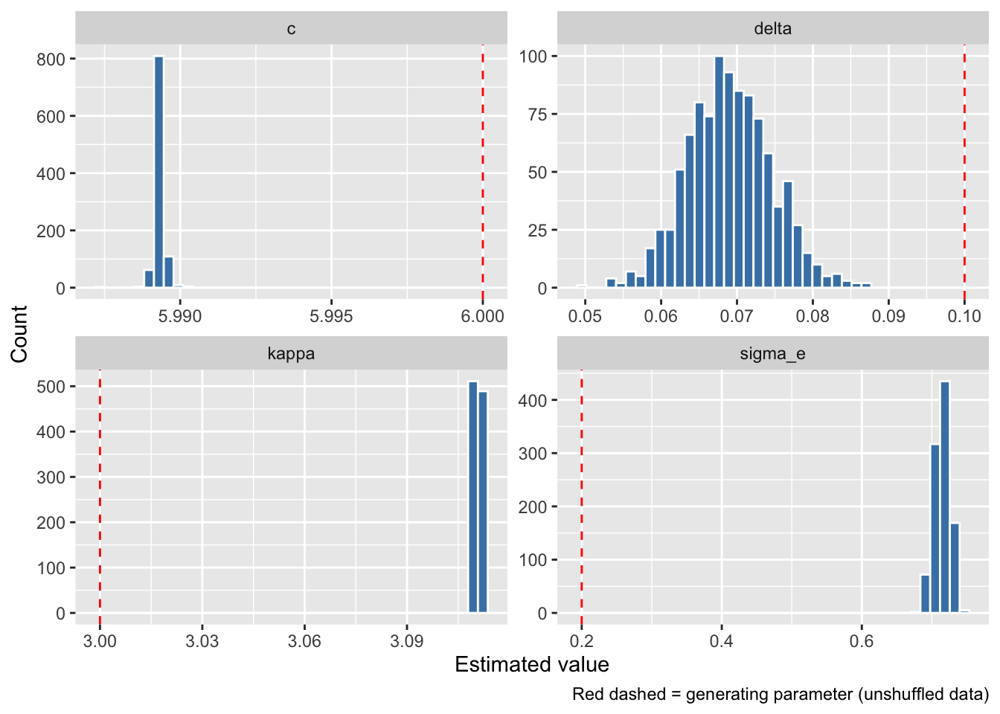
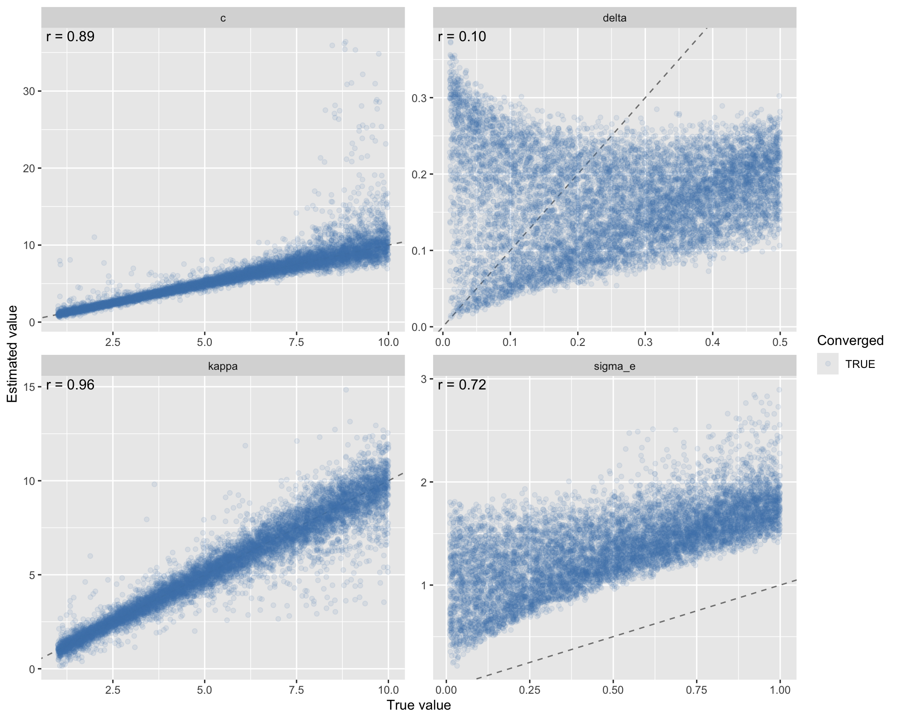
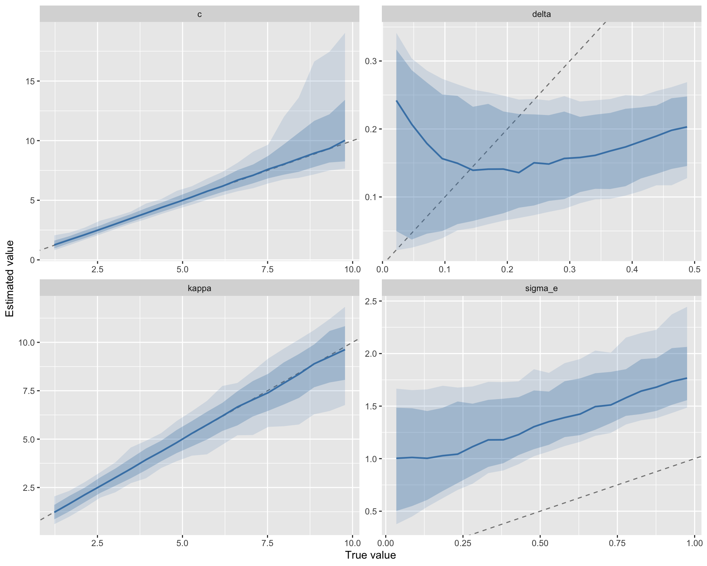

Model diagnostics: contraction-expansion (algo4) with logit noise, MLE
This notebook fits the contraction-expansion model (algo4) with logit-scale noise, developed in RL Algorithms: Exploration. The SDM model and optimality derivation are described in Optimal Arc Width (SDM).
Task and model summary
On each trial a participant reports a remembered color (continuous response) and sets a symmetric arc of half-width \(a_t \in (0,\pi)\) around it. Points are awarded as \[ p_t = (\pi - a_t)\,\mathbf{1}\!\bigl[|y_t| \le a_t\bigr], \] where \(y_t\) is the signed response error. Wider arcs are safer but earn fewer points, creating an accuracy–confidence tradeoff. Empirically, participants’ arc widths are near-optimal given their error distributions.
Response errors are modelled by the Signal Discrimination Model (SDM): \[ y_t \sim \text{SDM}(c,\kappa). \]
Deterministic arc-width update (algo4). On each trial the arc contracts toward 0 on a hit and expands toward \(\pi\) on a miss, with step-size \(\delta \in (0,1)\): \[ \tilde{a}_{t+1} = a_t\,(1-\delta) + \mathbf{1}\!\bigl[|y_t|>a_t\bigr]\,\delta\,\pi. \]
Logit-noise stochastic extension. To make the model estimable, we add Gaussian noise on the unconstrained logit scale. Define \[ \tilde{x}_{t+1} = \operatorname{logit}\!\left(\tilde{a}_{t+1}/\pi\right), \] then the stochastic transition is \[ x_{t+1} = \tilde{x}_{t+1} + \varepsilon_t, \qquad \varepsilon_t \sim \mathcal{N}(0,\sigma_\varepsilon^2), \] so that \(a_{t+1} = \pi\,\sigma(x_{t+1})\) is guaranteed to lie in \((0,\pi)\) without clipping.
Joint log-likelihood. Because \(x_{t+1} \mid a_t, y_t\) is normal, the full log-likelihood decomposes as \[
\ell(\theta) =
\underbrace{\sum_{t=1}^{T}\log f_{\text{SDM}}(y_t \mid c,\kappa)}_{\text{response errors}}
\;+\;
\underbrace{\sum_{t=1}^{T-1}\log\phi\!\left(x_{t+1};\; \tilde{x}_{t+1},\; \sigma_\varepsilon\right)}_{\text{arc transitions}},
\] with fitted parameter vector \(\theta=(c,\kappa,\delta,\sigma_\varepsilon)\). Below we verify identifiability via simulation-based parameter recovery and maximum-likelihood estimation with optim.
Simulate data
Generate a single subject’s worth of data from the algo4 logit-noise model with known parameters. We use run_arc_algorithm which feeds SDM-generated response errors y through the update function trial by trial.
true_pars <- list(c = 6, kappa = 3, delta = 0.1, sigma_e = 0.2)
set.seed(4233)
sim <- run_arc_algorithm(
arc_update_fun = algo4_logit_noise(
delta = true_pars$delta,
sigma_e = true_pars$sigma_e
),
c = true_pars$c,
kappa = true_pars$kappa,
init_arc = pi / 8,
n_trials = 1000
)
par(mfrow = c(1, 3))
plot(sim$a, type = "l", xlab = "Trial", ylab = "Arc width")
hist(sim$a, xlab = "Arc width")
hist(sim$y, xlab = "Response error")
Log-likelihood
The joint log-likelihood has two additive components:
- SDM component — the density of each response error \(y_t\)
- Arc-transition component — a normal density on the logit scale for the arc update from trial \(t\) to \(t+1\)
The functions algo4_loglik, par_to_unconstrained_algo4, par_from_unconstrained_algo4, and neg_loglik_algo4 are defined in R/arc-models.R (loaded above). Parameters \(c\), \(\kappa\), and \(\sigma_\varepsilon\) are strictly positive (estimated on the log scale); \(\delta
\in (0,1)\) is estimated on the logit scale.
Fit with optim
We initialise at perturbed values (not the truth) to verify that the optimiser can recover the generating parameters.
Compare estimated vs true parameters
# A tibble: 4 × 4
parameter initial true_value estimated
<chr> <dbl> <dbl> <dbl>
1 c 3 6 5.99
2 kappa 5 3 3.11
3 delta 0.05 0.1 0.103
4 sigma_e 0.5 0.2 0.195Likelihood profile at the MLE
A quick sanity check: evaluate the likelihood over a grid around each MLE estimate while holding the others fixed, to confirm we are at a peak.
best_theta <- fit$par
par_names <- c("c", "kappa", "delta", "sigma_e")
profiles <- purrr::map_dfr(seq_along(par_names), \(j) {
grid <- seq(best_theta[j] - 1, best_theta[j] + 1, length.out = 80)
ll_vals <- sapply(grid, \(v) {
theta_tmp <- best_theta
theta_tmp[j] <- v
-neg_loglik_algo4(theta_tmp, y = sim$y, a = sim$a)
})
if (par_names[j] == "delta") {
value <- inv_logit(grid)
} else {
value <- exp(grid)
}
tibble(
parameter = par_names[j],
theta_unconstrained = grid,
value = value,
loglik = ll_vals
)
})
ggplot(profiles, aes(x = value, y = loglik)) +
geom_line() +
geom_vline(data = comparison, aes(xintercept = estimated), linetype = "dashed", color = "blue") +
geom_vline(data = comparison, aes(xintercept = true_value), linetype = "dotted", color = "red") +
facet_wrap(~parameter, scales = "free") +
labs(x = "Parameter value", y = "Log-likelihood",
caption = "Blue dashed = MLE, Red dotted = true value")
Parameter recovery
Sample 10000 parameter sets uniformly, simulate data for each, fit via MLE, and check whether the true values are recovered.
n_recovery <- 10000
n_trials <- 1000
set.seed(2026)
recovery_true <- tibble(
iter = seq_len(n_recovery),
c = runif(n_recovery, 1, 10),
kappa = runif(n_recovery, 1, 10),
delta = runif(n_recovery, 0.01, 0.5),
sigma_e = runif(n_recovery, 0.01, 1)
)
fit_one <- function(iter, c, kappa, delta, sigma_e) {
sim <- run_arc_algorithm(
arc_update_fun = algo4_logit_noise(delta = delta, sigma_e = sigma_e),
c = c, kappa = kappa, init_arc = pi / 2, n_trials = n_trials
)
theta0 <- par_to_unconstrained_algo4(list(
c = 4, kappa = 4, delta = 0.1, sigma_e = 0.3
))
fit <- tryCatch(
optim(par = theta0, fn = neg_loglik_algo4, y = sim$y, a = sim$a,
method = "Nelder-Mead",
control = list(maxit = 5000, reltol = 1e-10)),
error = \(e) list(par = rep(NA_real_, 4), convergence = 99)
)
est <- par_from_unconstrained_algo4(fit$par)
tibble(
iter = iter,
c_est = est$c, kappa_est = est$kappa,
delta_est = est$delta, sigma_e_est = est$sigma_e,
converged = fit$convergence == 0
)
}
recovery_est <- with_cache("output/algo4_recovery_est.rds", {
purrr::pmap_dfr(recovery_true, fit_one)
})Tag iterations where at least one estimate exceeds 4× the max true generating value:
est_cols <- c("c_est", "kappa_est", "delta_est", "sigma_e_est")
true_cols <- c("c", "kappa", "delta", "sigma_e")
thresholds <- 4 * sapply(true_cols, \(col) max(recovery_true[[col]]))
outlier_mat <- sapply(seq_along(est_cols), \(j) {
recovery_est[[est_cols[j]]] > thresholds[j]
})
recovery_est$bad <- rowSums(outlier_mat, na.rm = TRUE) > 0Join true and estimated values and reshape for plotting:
recovery_df <- recovery_true |>
left_join(recovery_est, by = "iter") |>
pivot_longer(
cols = c(c, kappa, delta, sigma_e),
names_to = "parameter",
values_to = "true_value"
) |>
mutate(
estimated = case_when(
parameter == "c" ~ c_est,
parameter == "kappa" ~ kappa_est,
parameter == "delta" ~ delta_est,
parameter == "sigma_e" ~ sigma_e_est
)
) |>
select(iter, parameter, true_value, estimated, converged, bad)
cat("Converged:", sum(recovery_est$converged), "/", n_recovery,
sprintf("(%.1f%%)", 100 * mean(recovery_est$converged)), "\n")Converged: 10000 / 10000 (100.0%) Bad parameter estimates: 51 / 10000 (0.5%) Correlations between true and estimated values (converged runs only):
# A tibble: 4 × 4
parameter r rmse bias
<chr> <dbl> <dbl> <dbl>
1 c 0.892 1.49 0.238
2 delta 0.999 0.00664 0.00000732
3 kappa 0.959 0.757 -0.0368
4 sigma_e 0.999 0.0130 -0.000504 plot_df <- recovery_df |> filter(converged, !bad)
cor_labels <- plot_df |>
group_by(parameter) |>
summarise(
r = cor(true_value, estimated),
x = -Inf, y = Inf,
.groups = "drop"
) |>
mutate(label = sprintf("r = %.2f", r))
plot_df |>
ggplot(aes(x = true_value, y = estimated)) +
geom_abline(linetype = "dashed", color = "grey50") +
geom_point(aes(color = converged), alpha = 0.1, size = 1.5) +
geom_text(data = cor_labels, aes(x = x, y = y, label = label),
hjust = -0.1, vjust = 1.3, inherit.aes = FALSE, size = 4) +
facet_wrap(~parameter, scales = "free") +
scale_color_manual(values = c("TRUE" = "steelblue", "FALSE" = "red")) +
labs(x = "True value", y = "Estimated value", color = "Converged")
Binned summary: for each parameter, true values are split into 20 equal-width bins. Within each bin, we show the median estimate (line) and 80%/95% intervals (ribbons).
binned_df <- plot_df |>
group_by(parameter) |>
mutate(bin = cut(true_value, breaks = 20, labels = FALSE)) |>
group_by(parameter, bin) |>
summarise(
true_mid = mean(true_value),
median_est = median(estimated),
q025 = quantile(estimated, 0.025),
q10 = quantile(estimated, 0.10),
q90 = quantile(estimated, 0.90),
q975 = quantile(estimated, 0.975),
.groups = "drop"
)
ggplot(binned_df, aes(x = true_mid)) +
geom_abline(linetype = "dashed", color = "grey50") +
geom_ribbon(aes(ymin = q025, ymax = q975), alpha = 0.15, fill = "steelblue") +
geom_ribbon(aes(ymin = q10, ymax = q90), alpha = 0.3, fill = "steelblue") +
geom_line(aes(y = median_est), color = "steelblue", linewidth = 0.8) +
facet_wrap(~parameter, scales = "free") +
labs(x = "True value", y = "Estimated value")
Shuffled-trial diagnostics
This test checks whether the model can recover learning-related parameters from variability alone. Shuffling the trials should destroy the sequential dependencies that the algorithm relies on, so any recovery here reflects information not tied to trial-to-trial structure.
Shuffled-trial fits
Shuffle the trial order of the simulated dataset 1000 times and fit the model each time. This destroys trial-to-trial dependencies while keeping the same observed marginal distributions.
set.seed(2027)
n_shuffle <- 1000
fit_shuffled_once <- function(y, a) {
idx <- sample.int(length(y))
y_s <- y[idx]
a_s <- a[idx]
theta0 <- par_to_unconstrained_algo4(init_pars)
fit <- tryCatch(
optim(par = theta0, fn = neg_loglik_algo4, y = y_s, a = a_s,
method = "Nelder-Mead",
control = list(maxit = 5000, reltol = 1e-10)),
error = \(e) list(par = rep(NA_real_, 4), convergence = 99)
)
est <- par_from_unconstrained_algo4(fit$par)
tibble(
c = est$c, kappa = est$kappa,
delta = est$delta, sigma_e = est$sigma_e,
converged = fit$convergence == 0
)
}
shuffle_fits <- with_cache("output/algo4_shuffle_fits.rds", {
purrr::map_dfr(seq_len(n_shuffle), \(i) fit_shuffled_once(sim$y, sim$a))
})
shuffle_long <- shuffle_fits |>
pivot_longer(
cols = c(c, kappa, delta, sigma_e),
names_to = "parameter",
values_to = "estimated"
)
ggplot(shuffle_long, aes(x = estimated)) +
geom_histogram(bins = 40, fill = "steelblue", color = "white") +
geom_vline(
data = tibble(parameter = names(true_pars), true_value = unlist(true_pars)),
aes(xintercept = true_value), color = "red", linetype = "dashed"
) +
facet_wrap(~parameter, scales = "free") +
labs(x = "Estimated value", y = "Count",
caption = "Red dashed = generating parameter (unshuffled data)")
Parameter recovery with shuffled trials
Repeat the recovery analysis, but shuffle the trial order once before fitting each simulated dataset.
fit_one_shuffled <- function(iter, c, kappa, delta, sigma_e) {
sim <- run_arc_algorithm(
arc_update_fun = algo4_logit_noise(delta = delta, sigma_e = sigma_e),
c = c, kappa = kappa, init_arc = pi / 2, n_trials = n_trials
)
idx <- sample.int(length(sim$y))
sim$y <- sim$y[idx]
sim$a <- sim$a[idx]
theta0 <- par_to_unconstrained_algo4(list(
c = 4, kappa = 4, delta = 0.1, sigma_e = 0.3
))
fit <- tryCatch(
optim(par = theta0, fn = neg_loglik_algo4, y = sim$y, a = sim$a,
method = "Nelder-Mead",
control = list(maxit = 5000, reltol = 1e-10)),
error = \(e) list(par = rep(NA_real_, 4), convergence = 99)
)
est <- par_from_unconstrained_algo4(fit$par)
tibble(
iter = iter,
c_est = est$c, kappa_est = est$kappa,
delta_est = est$delta, sigma_e_est = est$sigma_e,
converged = fit$convergence == 0
)
}
recovery_est_shuffled <- with_cache("output/algo4_recovery_est_shuffled.rds", {
purrr::pmap_dfr(recovery_true, fit_one_shuffled)
})
outlier_mat_shuffled <- sapply(seq_along(est_cols), \(j) {
recovery_est_shuffled[[est_cols[j]]] > thresholds[j]
})
recovery_est_shuffled$bad <- rowSums(outlier_mat_shuffled, na.rm = TRUE) > 0
recovery_df_shuffled <- recovery_true |>
left_join(recovery_est_shuffled, by = "iter") |>
pivot_longer(
cols = c(c, kappa, delta, sigma_e),
names_to = "parameter",
values_to = "true_value"
) |>
mutate(
estimated = case_when(
parameter == "c" ~ c_est,
parameter == "kappa" ~ kappa_est,
parameter == "delta" ~ delta_est,
parameter == "sigma_e" ~ sigma_e_est
)
) |>
select(iter, parameter, true_value, estimated, converged, bad)
cat("Converged:", sum(recovery_est_shuffled$converged), "/", n_recovery,
sprintf("(%.1f%%)", 100 * mean(recovery_est_shuffled$converged)), "\n")Converged: 10000 / 10000 (100.0%) Bad parameter estimates: 57 / 10000 (0.6%) # A tibble: 4 × 4
parameter r rmse bias
<chr> <dbl> <dbl> <dbl>
1 c 0.887 1.51 0.226
2 delta 0.0962 0.173 -0.0886
3 kappa 0.960 0.749 -0.0404
4 sigma_e 0.717 0.897 0.860 plot_df_shuffled <- recovery_df_shuffled |> filter(converged, !bad)
cor_labels_shuffled <- plot_df_shuffled |>
group_by(parameter) |>
summarise(
r = cor(true_value, estimated),
x = -Inf, y = Inf,
.groups = "drop"
) |>
mutate(label = sprintf("r = %.2f", r))
plot_df_shuffled |>
ggplot(aes(x = true_value, y = estimated)) +
geom_abline(linetype = "dashed", color = "grey50") +
geom_point(aes(color = converged), alpha = 0.1, size = 1.5) +
geom_text(data = cor_labels_shuffled, aes(x = x, y = y, label = label),
hjust = -0.1, vjust = 1.3, inherit.aes = FALSE, size = 4) +
facet_wrap(~parameter, scales = "free") +
scale_color_manual(values = c("TRUE" = "steelblue", "FALSE" = "red")) +
labs(x = "True value", y = "Estimated value", color = "Converged")
binned_df_shuffled <- plot_df_shuffled |>
group_by(parameter) |>
mutate(bin = cut(true_value, breaks = 20, labels = FALSE)) |>
group_by(parameter, bin) |>
summarise(
true_mid = mean(true_value),
median_est = median(estimated),
q025 = quantile(estimated, 0.025),
q10 = quantile(estimated, 0.10),
q90 = quantile(estimated, 0.90),
q975 = quantile(estimated, 0.975),
.groups = "drop"
)
ggplot(binned_df_shuffled, aes(x = true_mid)) +
geom_abline(linetype = "dashed", color = "grey50") +
geom_ribbon(aes(ymin = q025, ymax = q975), alpha = 0.15, fill = "steelblue") +
geom_ribbon(aes(ymin = q10, ymax = q90), alpha = 0.3, fill = "steelblue") +
geom_line(aes(y = median_est), color = "steelblue", linewidth = 0.8) +
facet_wrap(~parameter, scales = "free") +
labs(x = "True value", y = "Estimated value")